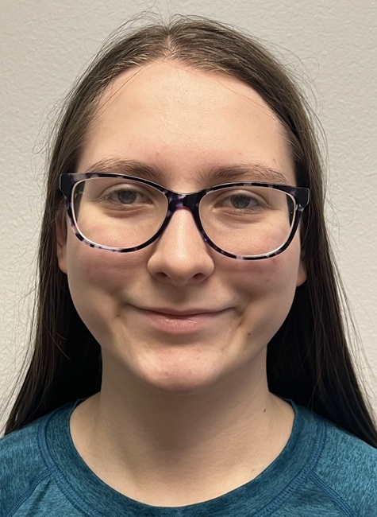
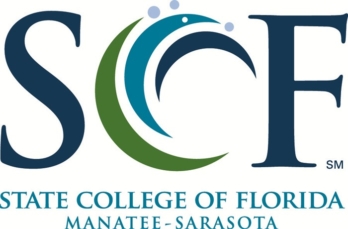

About Me

My name is Veronica Van Cleave. I love activities that allow me to explore my creativity such as making ceramics and glassblowing. Working raw materials into something original requires a lot of patience and problem-solving skills, but the rewards are definitely worth it. Programming appeals to me for a lot of the same reasons. When something unexpected happens while building a website or writing code, I try every possible angle to overcome the challenge.
Education and Skills

I'm currently on track to earn multiple associate degrees from the State College of Florida. In addition to a traditional Associate in Arts degree, I'm also pursuing an Associate in Science in Computer Information Technology and Associate in Science in Software Development. I'm working on these simultaneously because the more classes I take, the more I've come to realize how the different subjects all connect. This unified approach to learning requires organization and adaptability, but I'm up to the task.
So far, my favorite classes have all involved coding. Having multiple approaches or solutions to a coding problem is a challenge I enjoy. Along the way, I've gained experience with Python and Java, website development, debugging, artificial intelligence, and databases. Future coursework will expand my knowledge of business and networking.
Professional Goals
After completing my A.A. and A.S. degrees at the State College of Florida, I intend to transfer to a state university in Florida to earn a bachelor's degree. Technology is constantly changing, and I look forward to the challenge of learning and evolving along with it. My goal is to build a career that combines creativity, technology, and problem-solving.